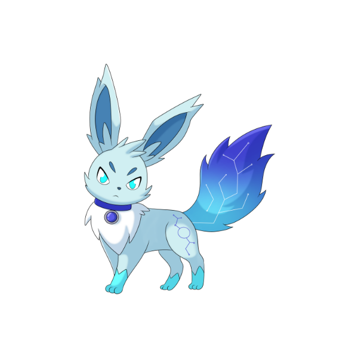
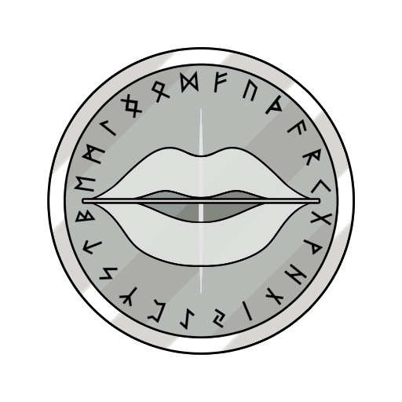
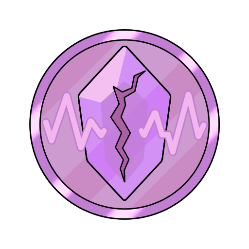
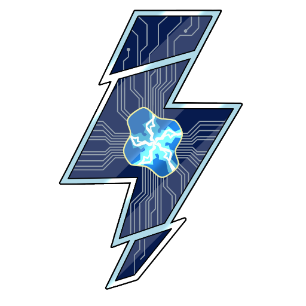
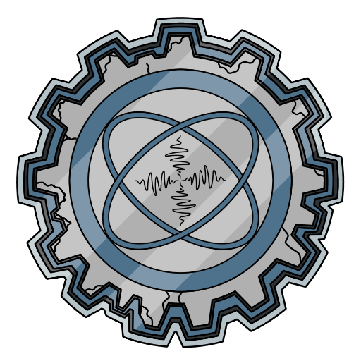
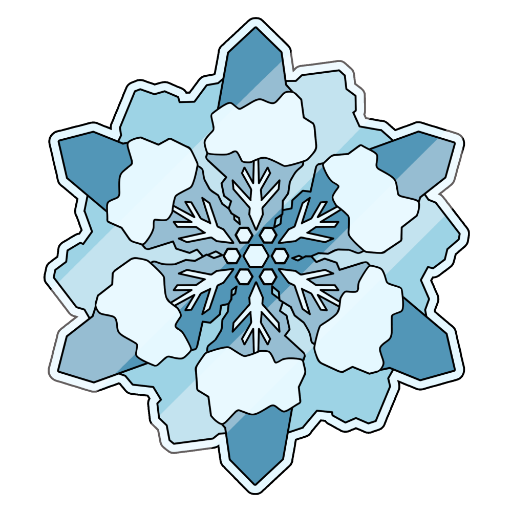
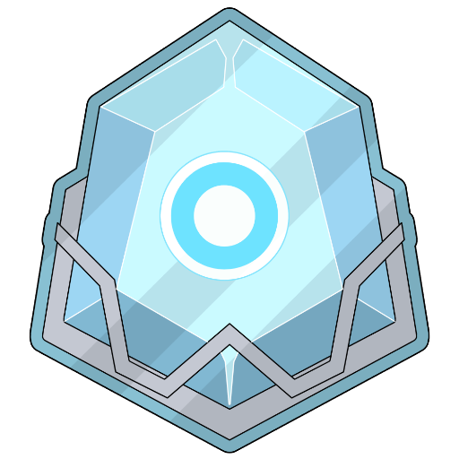

URANO
Disturbi Neurologici
L'energia che danza tra le connessioni.
GLI ABITANTI DEL MIO URANO

Silen
La forma di Silen che attraversa le tempeste del sistema nervoso.
Nella sua forma uraniana attraversa le tempeste elettriche del sistema nervoso: le parole che smarriscono la strada, il dolore che torna, i fulmini che scuotono il corpo. Per convivere con l'imprevisto e ritrovare, ogni volta, la propria orbita.OGNI LUNA UNA SCINTILLA NEL SISTEMA NERVOSO
Ogni luna di Urano racconta una tempesta del sistema nervoso: le parole che mancano, il dolore che torna, i fulmini che scuotono.
Esplora le schede dedicate ai disturbi neurologici, con rispetto per chi ogni giorno ricompone le proprie connessioni.
Ogni scheda ha due voci: Cos'è, la spiegazione chiara, e La luna racconta, la voce del progetto. Divulgazione: non sostituisce il parere di un professionista. Le storie stanno nei libri.

Afasia
Le parole smarriscono la strada.
L'afasia è un disturbo del linguaggio causato da una lesione cerebrale, tipicamente un ictus: si fatica a parlare, capire, leggere o scrivere, mentre l'intelligenza resta intatta. La riabilitazione logopedica può migliorare molto la comunicazione.
Questa illustrazione è riprodotta su calamite, spille e adesivi.
Vai su Redbubble
Emicrania Cronica
Un dolore che torna, e insegna il rispetto dei propri limiti.
L'emicrania cronica è un mal di testa ricorrente per almeno 15 giorni al mese, di cui almeno 8 con caratteristiche emicraniche. Non è un semplice mal di testa: è una condizione neurologica invalidante, con nausea e sensibilità a luce e suoni, che si affronta con percorsi specialistici.
Questa illustrazione è riprodotta su calamite, spille e adesivi.
Vai su Redbubble
Epilessia
La tempesta elettrica che attraversa il cervello.
L'epilessia è una condizione neurologica in cui il cervello produce scariche elettriche anomale, causando crisi ricorrenti. Le crisi hanno forme molto diverse tra loro; con i farmaci giusti la maggior parte delle persone le controlla bene.
Questa illustrazione è riprodotta su calamite, spille e adesivi.
Vai su Redbubble
Malattia di Parkinson
Il tempo che rallenta il gesto.
La malattia di Parkinson è una malattia neurologica progressiva che rallenta e irrigidisce il movimento: tremore, lentezza, rigidità, difficoltà nell'equilibrio. Nasce dalla perdita di neuroni che producono dopamina, e i trattamenti attuali alleviano molto i sintomi.
Questa illustrazione è riprodotta su calamite, spille e adesivi.
Vai su Redbubble
Sclerosi Multipla
Un corpo che cambia le proprie mappe.
La sclerosi multipla è una malattia autoimmune del sistema nervoso centrale: il sistema immunitario danneggia la guaina che protegge i nervi, causando sintomi variabili — stanchezza, vista, equilibrio, formicolii. È diversa da persona a persona, ma oggi esistono terapie che ne modificano il decorso.
Questa illustrazione è riprodotta su calamite, spille e adesivi.
Vai su Redbubble
Sclerosi Laterale Amiotrofica (SLA)
Quando il movimento si fa silenzio.
La sclerosi laterale amiotrofica (SLA) è una malattia neurologica progressiva che intacca i motoneuroni, i nervi che comandano i muscoli: il movimento e la parola si riducono progressivamente, mentre mente e sensi restano integri. È rara e ancora senza cure risolutive, ma la ricerca e le cure di supporto incidono molto sulla qualità della vita.
Questa illustrazione è riprodotta su calamite, spille e adesivi.
Vai su RedbubbleINFORMAZIONI E LICENZE
Una Voce Dal Profondo è un progetto di divulgazione psicologica e narrazione. Le opere sono tutelate da diritto d'autore: i libri escono su Amazon e le illustrazioni sono riprodotte su oggetti da Redbubble — entrambe le piattaforme gestiscono la vendita e mi corrispondono le royalties. Per collaborazioni, richieste professionali o licenze:
Iscriviti alla nostra mailing list
Novità su libri, storie e nuove lune: qualche email, mai di più.
Se il modulo qui sopra non funziona, apri l'iscrizione in una nuova scheda
Ogni riproduzione non autorizzata è vietata.